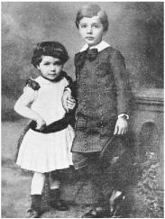

Maja, age 3, and Albert Einstein, 5
He was slow in learning how to talk. “My parents were so worried,” he later recalled, “that they consulted a doctor.” Even after he had begun using words, sometime after the age of 2, he developed a quirk that prompted the family maid to dub him “der Depperte,” the dopey one, and others in his family to label him as “almost backwards.” Whenever he had something to say, he would try it out on himself, whispering it softly until it sounded good enough to pronounce aloud. “Every sentence he uttered,” his worshipful younger sister recalled, “no matter how routine, he repeated to himself softly, moving his lips.” It was all very worrying, she said. “He had such difficulty with language that those around him feared he would never learn.”1
His slow development was combined with a cheeky rebelliousness toward authority, which led one schoolmaster to send him packing and another to amuse history by declaring that he would never amount to much. These traits made Albert Einstein the patron saint of distracted school kids everywhere.2 But they also helped to make him, or so he later surmised, the most creative scientific genius of modern times.
His cocky contempt for authority led him to question received wisdom in ways that well-trained acolytes in the academy never contemplated. And as for his slow verbal development, he came to believe that it allowed him to observe with wonder the everyday phenomena that others took for granted. “When I ask myself how it happened that I in particular discovered the relativity theory, it seemed to lie in the following circumstance,” Einstein once explained. “The ordinary adult never bothers his head about the problems of space and time. These are things he has thought of as a child. But I developed so slowly that I began to wonder about space and time only when I was already grown up. Consequently, I probed more deeply into the problem than an ordinary child would have.”3
Einstein’s developmental problems have probably been exaggerated, perhaps even by himself, for we have some letters from his adoring grandparents saying that he was just as clever and endearing as every grandchild is. But throughout his life, Einstein had a mild form of echolalia, causing him to repeat phrases to himself, two or three times, especially if they amused him. And he generally preferred to think in pictures, most notably in famous thought experiments, such as imagining watching lightning strikes from a moving train or experiencing gravity while inside a falling elevator. “I very rarely think in words at all,” he later told a psychologist. “A thought comes, and I may try to express it in words afterwards.”4
Einstein was descended, on both parents’ sides, from Jewish trades-men and peddlers who had, for at least two centuries, made modest livings in the rural villages of Swabia in southwestern Germany. With each generation they had become, or at least so they thought, increasingly assimilated into the German culture that they loved. Although Jewish by cultural designation and kindred instinct, they displayed scant interest in the religion or its rituals.
Einstein regularly dismissed the role that his heritage played in shaping who he became. “Exploration of my ancestors,” he told a friend late in life, “leads nowhere.”5 That’s not fully true. He was blessed by being born into an independent-minded and intelligent family line that valued education, and his life was certainly affected, in ways both beautiful and tragic, by membership in a religious heritage that had a distinctive intellectual tradition and a history of being both outsiders and wanderers. Of course, the fact that he happened to be Jewish in Germany in the early twentieth century made him more of an outsider, and more of a wanderer, than he would have preferred—but that, too, became integral to who he was and the role he would play in world history.
Einstein’s father, Hermann, was born in 1847 in the Swabian village of Buchau, whose thriving Jewish community was just beginning to enjoy the right to practice any vocation. Hermann showed “a marked inclination for mathematics,”6 and his family was able to send him seventy-five miles north to Stuttgart for high school. But they could not afford to send him to a university, most of which were closed to Jews in any event, so he returned home to Buchau to go into trade.
A few years later, as part of the general migration of rural German Jews into industrial centers during the late nineteenth century, Hermann and his parents moved thirty-five miles away to the more prosperous town of Ulm, which prophetically boasted as its motto “Ulmenses sunt mathematici,” the people of Ulm are mathematicians.7
There he became a partner in a cousin’s featherbed company. He was “exceedingly friendly, mild and wise,” his son would recall.8 With a gentleness that blurred into docility, Hermann was to prove inept as a businessman and forever impractical in financial matters. But his docility did make him well suited to be a genial family man and good husband to a strong-willed woman. At age 29, he married Pauline Koch, eleven years his junior.
Pauline’s father, Julius Koch, had built a considerable fortune as a grain dealer and purveyor to the royal Württemberg court. Pauline inherited his practicality, but she leavened his dour disposition with a teasing wit edged with sarcasm and a laugh that could be both infectious and wounding (traits she would pass on to her son). From all accounts, the match between Hermann and Pauline was a happy one, with her strong personality meshing “in complete harmony” with her husband’s passivity.9
Their first child was born at 11:30 a.m. on Friday, March 14, 1879, in Ulm, which had recently joined, along with the rest of Swabia, the new German Reich. Initially, Pauline and Hermann had planned to name the boy Abraham, after his paternal grandfather. But they came to feel, he later said, that the name sounded “too Jewish.”10 So they kept the initial A and named him Albert Einstein.
In 1880, just a year after Albert’s birth, Hermann’s featherbed business foundered and he was persuaded to move to Munich by his brother Jakob, who had opened a gas and electrical supply company there. Jakob, the youngest of five siblings, had been able to get a higher education, unlike Hermann, and he had qualified as an engineer. As they competed for contracts to provide generators and electrical lighting to municipalities in southern Germany, Jakob was in charge of the technical side while Hermann provided a modicum of salesmanship skills plus, perhaps more important, loans from his wife’s side of the family.11
Pauline and Hermann had a second and final child, a daughter, in November 1881, who was named Maria but throughout her life used instead the diminutive Maja. When Albert was shown his new sister for the first time, he was led to believe that she was like a wonderful toy that he would enjoy. His response was to look at her and exclaim, “Yes, but where are the wheels?”12 It may not have been the most perceptive of questions, but it did show that during his third year his language challenges did not prevent him from making some memorable comments. Despite a few childhood squabbles, Maja was to become her brother’s most intimate soul mate.
The Einsteins settled into a comfortable home with mature trees and an elegant garden in a Munich suburb for what was to be, at least through most of Albert’s childhood, a respectable bourgeois existence. Munich had been architecturally burnished by mad King Ludwig II (1845–1886) and boasted a profusion of churches, art galleries, and concert halls that favored the works of resident Richard Wagner. In 1882, just after the Einsteins arrived, the city had about 300,000 residents, 85 percent of them Catholics and 2 percent of them Jewish, and it was the host of the first German electricity exhibition, at which electric lights were introduced to the city streets.
Einstein’s back garden was often bustling with cousins and children. But he shied from their boisterous games and instead “occupied himself with quieter things.” One governess nicknamed him “Father Bore.” He was generally a loner, a tendency he claimed to cherish throughout his life, although his was a special sort of detachment that was interwoven with a relish for camaraderie and intellectual companionship. “From the very beginning he was inclined to separate himself from children his own age and to engage in daydreaming and meditative musing,” according to Philipp Frank, a longtime scientific colleague.13
He liked to work on puzzles, erect complex structures with his toy building set, play with a steam engine that his uncle gave him, and build houses of cards. According to Maja, Einstein was able to construct card structures as high as fourteen stories. Even discounting the recollections of a star-struck younger sister, there was probably a lot of truth to her claim that “persistence and tenacity were obviously already part of his character.”
He was also, at least as a young child, prone to temper tantrums. “At such moments his face would turn completely yellow, the tip of his nose snow-white, and he was no longer in control of himself,” Maja remembers. Once, at age 5, he grabbed a chair and threw it at a tutor, who fled and never returned. Maja’s head became the target of various hard objects. “It takes a sound skull,” she later joked, “to be the sister of an intellectual.” Unlike his persistence and tenacity, he eventually outgrew his temper.14
To use the language of psychologists, the young Einstein’s ability to systemize (identify the laws that govern a system) was far greater than his ability to empathize (sense and care about what other humans are feeling), which have led some to ask if he might have exhibited mild symptoms of some developmental disorder.15 However, it is important to note that, despite his aloof and occasionally rebellious manner, he did have the ability to make close friends and to empathize both with colleagues and humanity in general.
The great awakenings that happen in childhood are usually lost to memory. But for Einstein, an experience occurred when he was 4 or 5 that would alter his life and be etched forever in his mind—and in the history of science.
He was sick in bed one day, and his father brought him a compass. He later recalled being so excited as he examined its mysterious powers that he trembled and grew cold. The fact that the magnetic needle behaved as if influenced by some hidden force field, rather than through the more familiar mechanical method involving touch or contact, produced a sense of wonder that motivated him throughout his life. “I can still remember—or at least I believe I can remember—that this experience made a deep and lasting impression on me,” he wrote on one of the many occasions he recounted the incident. “Something deeply hidden had to be behind things.”16
“It’s an iconic story,” Dennis Overbye noted in Einstein in Love,“the young boy trembling to the invisible order behind chaotic reality.” It has been told in the movie IQ, in which Einstein, played by Walter Matthau, wears the compass around his neck, and it is the focus of a children’s book, Rescuing Albert’s Compass, by Shulamith Oppenheim, whose father-in-law heard the tale from Einstein in 1911.17
After being mesmerized by the compass needle’s fealty to an unseen field, Einstein would develop a lifelong devotion to field theories as a way to describe nature. Field theories use mathematical quantities, such as numbers or vectors or tensors, to describe how the conditions at any point in space will affect matter or another field. For example, in a gravitational or an electromagnetic field there are forces that could act on a particle at any point, and the equations of a field theory describe how these change as one moves through the region. The first paragraph of his great 1905 paper on special relativity begins with a consideration of the effects of electrical and magnetic fields; his theory of general relativity is based on equations that describe a gravitational field; and at the very end of his life he was doggedly scribbling further field equations in the hope that they would form the basis for a theory of everything. As the science historian Gerald Holton has noted, Einstein regarded “the classical concept of the field the greatest contribution to the scientific spirit.”18
His mother, an accomplished pianist, also gave him a gift at around the same time, one that likewise would last throughout his life. She arranged for him to take violin lessons. At first he chafed at the mechanical discipline of the instruction. But after being exposed to Mozart’s sonatas, music became both magical and emotional to him. “I believe that love is a better teacher than a sense of duty,” he said, “at least for me.”19
Soon he was playing Mozart duets, with his mother accompanying him on the piano. “Mozart’s music is so pure and beautiful that I see it as a reflection of the inner beauty of the universe itself,” he later told a friend. “Of course,” he added in a remark that reflected his view of math and physics as well as of Mozart, “like all great beauty, his music was pure simplicity.”20
Music was no mere diversion. On the contrary, it helped him think. “Whenever he felt that he had come to the end of the road or faced a difficult challenge in his work,” said his son Hans Albert, “he would take refuge in music and that would solve all his difficulties.” The violin thus proved useful during the years he lived alone in Berlin, wrestling with general relativity. “He would often play his violin in his kitchen late at night, improvising melodies while he pondered complicated problems,” a friend recalled. “Then, suddenly, in the middle of playing, he would announce excitedly, ‘I’ve got it!’ As if by inspiration, the answer to the problem would have come to him in the midst of music.”21
His appreciation for music, and especially for Mozart, may have reflected his feel for the harmony of the universe. As Alexander Moszkowski, who wrote a biography of Einstein in 1920 based on conversations with him, noted, “Music, Nature, and God became intermingled in him in a complex of feeling, a moral unity, the trace of which never vanished.”22
Throughout his life, Albert Einstein would retain the intuition and the awe of a child. He never lost his sense of wonder at the magic of nature’s phenomena—magnetic fields, gravity, inertia, acceleration, light beams—which grown-ups find so commonplace. He retained the ability to hold two thoughts in his mind simultaneously, to be puzzled when they conflicted, and to marvel when he could smell an underlying unity. “People like you and me never grow old,” he wrote a friend later in life. “We never cease to stand like curious children before the great mystery into which we were born.”23
In his later years, Einstein would tell an old joke about an agnostic uncle, who was the only member of his family who went to synagogue. When asked why he did so, the uncle would respond, “Ah, but you never know.” Einstein’s parents, on the other hand, were “entirely irreligious” and felt no compulsion to hedge their bets. They did not keep kosher or attend synagogue, and his father referred to Jewish rituals as “ancient superstitions.”24
Consequently, when Albert turned 6 and had to go to school, his parents did not care that there was no Jewish one near their home. Instead he went to the large Catholic school in their neighborhood, the Petersschule. As the only Jew among the seventy students in his class, Einstein took the standard course in Catholic religion and ended up enjoying it immensely. Indeed, he did so well in his Catholic studies that he helped his classmates with theirs.25
One day his teacher brought a large nail to the class.“The nails with which Jesus was nailed to the cross looked like this,” he said.26 Nevertheless, Einstein later said that he felt no discrimination from the teachers. “The teachers were liberal and made no distinction based on denominations,” he wrote. His fellow students, however, were a different matter. “Among the children at the elementary school, anti-Semitism was prevalent,” he recalled.
Being taunted on his walks to and from school based on “racial characteristics about which the children were strangely aware” helped reinforce the sense of being an outsider, which would stay with him his entire life. “Physical attacks and insults on the way home from school were frequent, but for the most part not too vicious. Nevertheless, they were sufficient to consolidate, even in a child, a lively sense of being an outsider.”27
When he turned 9, Einstein moved up to a high school near the center of Munich, the Luitpold Gymnasium, which was known as an enlightened institution that emphasized math and science as well as Latin and Greek. In addition, the school supplied a teacher to provide religious instruction for him and other Jews.
Despite his parents’ secularism, or perhaps because of it, Einstein rather suddenly developed a passionate zeal for Judaism. “He was so fervent in his feelings that, on his own, he observed Jewish religious strictures in every detail,” his sister recalled. He ate no pork, kept kosher dietary laws, and obeyed the strictures of the Sabbath, all rather difficult to do when the rest of his family had a lack of interest bordering on disdain for such displays. He even composed his own hymns for the glorification of God, which he sang to himself as he walked home from school.28
One widely held belief about Einstein is that he failed math as a student, an assertion that is made, often accompanied by the phrase “as everyone knows,” by scores of books and thousands of websites designed to reassure underachieving students. It even made it into the famous “Ripley’s Believe It or Not!” newspaper column.
Alas, Einstein’s childhood offers history many savory ironies, but this is not one of them. In 1935, a rabbi in Princeton showed him a clipping of the Ripley’s column with the headline “Greatest Living Mathematician Failed in Mathematics.” Einstein laughed. “I never failed in mathematics,” he replied, correctly. “Before I was fifteen I had mastered differential and integral calculus.”29
In fact, he was a wonderful student, at least intellectually. In primary school, he was at the top of his class. “Yesterday Albert got his grades,” his mother reported to an aunt when he was 7. “Once again he was ranked first.” At the gymnasium, he disliked the mechanical learning of languages such as Latin and Greek, a problem exacerbated by what he later said was his “bad memory for words and texts.” But even in these courses, Einstein consistently got top grades. Years later, when Einstein celebrated his fiftieth birthday and there were stories about how poorly the great genius had fared at the gymnasium, the school’s current principal made a point of publishing a letter revealing how good his grades actually were.30
As for math, far from being a failure, he was “far above the school requirements.” By age 12, his sister recalled, “he already had a predilection for solving complicated problems in applied arithmetic,” and he decided to see if he could jump ahead by learning geometry and algebra on his own. His parents bought him the textbooks in advance so that he could master them over summer vacation. Not only did he learn the proofs in the books, he tackled the new theories by trying to prove them on his own. “Play and playmates were forgotten,” she noted. “For days on end he sat alone, immersed in the search for a solution, not giving up before he had found it.”31
His uncle Jakob Einstein, the engineer, introduced him to the joys of algebra. “It’s a merry science,” he explained. “When the animal that we are hunting cannot be caught, we call it X temporarily and continue to hunt until it is bagged.” He went on to give the boy even more difficult challenges, Maja recalled, “with good-natured doubts about his ability to solve them.” When Einstein triumphed, as he invariably did, he “was overcome with great happiness and was already then aware of the direction in which his talents were leading him.”
Among the concepts that Uncle Jakob threw at him was the Pythagorean theorem (the square of the lengths of the legs of a right triangle add up to the square of the length of the hypotenuse). “After much effort I succeeded in ‘proving’ this theorem on the basis of the similarity of triangles,” Einstein recalled. Once again he was thinking in pictures. “It seemed to me ‘evident’ that the relations of the sides of the right-angled triangles would have to be completely determined by one of the acute angles.”32
Maja, with the pride of a younger sister, called Einstein’s Pythagorean proof “an entirely original new one.” Although perhaps new to him, it is hard to imagine that Einstein’s approach, which was surely similar to the standard ones based on the proportionality of the sides of similar triangles, was completely original. Nevertheless, it did show Einstein’s youthful appreciation that elegant theorems can be derived from simple axioms—and the fact that he was in little danger of failing math. “As a boy of 12, I was thrilled to see that it was possible to find out truth by reasoning alone, without the help of any outside experience,” he told a reporter from a high school newspaper in Princeton years later. “I became more and more convinced that nature could be understood as a relatively simple mathematical structure.”33
Einstein’s greatest intellectual stimulation came from a poor medical student who used to dine with his family once a week. It was an old Jewish custom to take in a needy religious scholar to share the Sabbath meal; the Einsteins modified the tradition by hosting instead a medical student on Thursdays. His name was Max Talmud (later changed to Talmey, when he immigrated to the United States), and he began his weekly visits when he was 21 and Einstein was 10. “He was a pretty, dark-haired boy,” remembered Talmud. “In all those years, I never saw him reading any light literature. Nor did I ever see him in the company of schoolmates or other boys his age.”34
Talmud brought him science books, including a popular illustrated series called People’s Books on Natural Science, “a work which I read with breathless attention,” said Einstein. The twenty-one little volumes were written by Aaron Bernstein, who stressed the interrelations between biology and physics, and he reported in great detail the scientific experiments being done at the time, especially in Germany.35
In the opening section of the first volume, Bernstein dealt with the speed of light, a topic that obviously fascinated him. Indeed, he returned to it repeatedly in his subsequent volumes, including eleven essays on the topic in volume 8. Judging from the thought experiments that Einstein later used in creating his theory of relativity, Bernstein’s books appear to have been influential.
For example, Bernstein asked readers to imagine being on a speeding train. If a bullet is shot through the window, it would seem that it was shot at an angle, because the train would have moved between the time the bullet entered one window and exited the window on the other side. Likewise, because of the speed of the earth through space, the same must be true of light going through a telescope. What was amazing, said Bernstein, was that experiments showed the same effect no matter how fast the source of the light was moving. In a sentence that, because of its relation to what Einstein would later famously conclude, seems to have made an impression, Bernstein declared, “Since each kind of light proves to be of exactly the same speed, the law of the speed of light can well be called the most general of all of nature’s laws.”
In another volume, Bernstein took his young readers on an imaginary trip through space. The mode of transport was the wave of an electric signal. His books celebrated the joyful wonders of scientific investigation and included such exuberant passages as this one written about the successful prediction of the location of the new planet Uranus: “Praised be this science! Praised be the men who do it! And praised be the human mind, which sees more sharply than does the human eye.”36
Bernstein was, as Einstein would later be, eager to tie together all of nature’s forces. For example, after discussing how all electromagnetic phenomena, such as light, could be considered waves, he speculated that the same may be true for gravity. A unity and simplicity, Bernstein wrote, lay beneath all the concepts applied by our perceptions. Truth in science consisted in discovering theories that described this underlying reality. Einstein later recalled the revelation, and the realist attitude, that this instilled in him as a young boy: “Out yonder there was this huge world, which exists independently of us human beings and which stands before us like a great, eternal riddle.”37
Years later, when they met in New York during Einstein’s first visit there, Talmud asked what he thought, in retrospect, of Bernstein’s work. “A very good book,” he said. “It has exerted a great influence on my whole development.”38
Talmud also helped Einstein continue to explore the wonders of mathematics by giving him a textbook on geometry two years before he was scheduled to learn that subject in school. Later, Einstein would refer to it as “the sacred little geometry book” and speak of it with awe: “Here were assertions, as for example the intersection of the three altitudes of a triangle in one point, which—though by no means evident—could nevertheless be proved with such certainty that any doubt appeared to be out of the question. This lucidity and certainty made an indescribable impression upon me.” Years later, in a lecture at Oxford, Einstein noted, “If Euclid failed to kindle your youthful enthusiasm, then you were not born to be a scientific thinker.”39
When Talmud arrived each Thursday, Einstein delighted in showing him the problems he had solved that week. Initially, Talmud was able to help him, but he was soon surpassed by his pupil. “After a short time, a few months, he had worked through the whole book,” Talmud recalled. “He thereupon devoted himself to higher mathematics . . . Soon the flight of his mathematical genius was so high that I could no longer follow.”40
So the awed medical student moved on to introducing Einstein to philosophy. “I recommended Kant to him,” he recalled. “At that time he was still a child, only thirteen years old, yet Kant’s works, incomprehensible to ordinary mortals, seemed to be clear to him.” Kant became, for a while, Einstein’s favorite philosopher, and his Critique of Pure Reason eventually led him to delve also into David Hume, Ernst Mach, and the issue of what can be known about reality.
Einstein’s exposure to science produced a sudden reaction against religion at age 12, just as he would have been readying for a bar mitzvah. Bernstein, in his popular science volumes, had reconciled science with religious inclination. As he put it, “The religious inclination lies in the dim consciousness that dwells in humans that all nature, including the humans in it, is in no way an accidental game, but a work of lawfulness, that there is a fundamental cause of all existence.”
Einstein would later come close to these sentiments. But at the time, his leap away from faith was a radical one. “Through the reading of popular scientific books, I soon reached the conviction that much in the stories of the Bible could not be true. The consequence was a positively fanatic orgy of freethinking coupled with the impression that youth is intentionally being deceived by the state through lies; it was a crushing impression.”41
As a result, Einstein avoided religious rituals for the rest of his life. “There arose in Einstein an aversion to the orthodox practice of the Jewish or any traditional religion, as well as to attendance at religious services, and this he has never lost,” his friend Philipp Frank later noted. He did, however, retain from his childhood religious phase a profound reverence for the harmony and beauty of what he called the mind of God as it was expressed in the creation of the universe and its laws.42
Einstein’s rebellion against religious dogma had a profound effect on his general outlook toward received wisdom. It inculcated an allergic reaction against all forms of dogma and authority, which was to affect both his politics and his science. “Suspicion against every kind of authority grew out of this experience, an attitude which has never again left me,” he later said. Indeed, it was this comfort with being a nonconformist that would define both his science and his social thinking for the rest of his life.
He would later be able to pull off this contrariness with a grace that was generally endearing, once he was accepted as a genius. But it did not play so well when he was merely a sassy student at a Munich gymnasium. “He was very uncomfortable in school,” according to his sister. He found the style of teaching—rote drills, impatience with questioning—to be repugnant. “The military tone of the school, the systematic training in the worship of authority that was supposed to accustom pupils at an early age to military discipline, was particularly unpleasant.”43
Even in Munich, where the Bavarian spirit engendered a less regimented approach to life, this Prussian glorification of the military had taken hold, and many of the children loved to play at being soldiers. When troops would come by, accompanied by fifes and drums, kids would pour into the streets to join the parade and march in lockstep. But not Einstein. Watching such a display once, he began to cry. “When I grow up, I don’t want to be one of those poor people,” he told his parents. As Einstein later explained, “When a person can take pleasure in marching in step to a piece of music it is enough to make me despise him. He has been given his big brain only by mistake.”44
The opposition he felt to all types of regimentation made his education at the Munich gymnasium increasingly irksome and contentious. The mechanical learning there, he complained, “seemed very much akin to the methods of the Prussian army, where a mechanical discipline was achieved by repeated execution of meaningless orders.” In later years, he would liken his teachers to members of the military. “The teachers at the elementary school seemed to me like drill sergeants,” he said, “and the teachers at the gymnasium like lieutenants.”
He once asked C. P. Snow, the British writer and scientist, whether he was familiar with the German word Zwang. Snow allowed that he was; it meant constraint, compulsion, obligation, coercion. Why? In his Munich school, Einstein answered, he had made his first strike against Zwang, and it had helped define him ever since.45
Skepticism and a resistance to received wisdom became a hallmark of his life. As he proclaimed in a letter to a fatherly friend in 1901, “A foolish faith in authority is the worst enemy of truth.”46
Throughout the six decades of his scientific career, whether leading the quantum revolution or later resisting it, this attitude helped shape Einstein’s work. “His early suspicion of authority, which never wholly left him, was to prove of decisive importance,” said Banesh Hoffmann, who was a collaborator of Einstein’s in his later years. “Without it he would not have been able to develop the powerful independence of mind that gave him the courage to challenge established scientific beliefs and thereby revolutionize physics.”47
This contempt for authority did not endear him to the German “lieutenants” who taught him at his school. As a result, one of his teachers proclaimed that his insolence made him unwelcome in class. When Einstein insisted that he had committed no offense, the teacher replied, “Yes, that is true, but you sit there in the back row and smile, and your mere presence here spoils the respect of the class for me.”48
Einstein’s discomfort spiraled toward depression, perhaps even close to a nervous breakdown, when his father’s business suffered a sudden reversal of fortune. The collapse was a precipitous one. During most of Einstein’s school years, the Einstein brothers’ company had been a success. In 1885, it had two hundred employees and provided the first electrical lights for Munich’s Oktoberfest. Over the next few years, it won the contract to wire the community of Schwabing, a Munich suburb of ten thousand people, using gas motors to drive twin dynamos that the Einsteins had designed. Jakob Einstein received six patents for improvements in arc lamps, automatic circuit breakers, and electric meters. The company was poised to rival Siemens and other power companies then flourishing. To raise capital, the brothers mortgaged their homes, borrowed more than 60,000 marks at 10 percent interest, and went deeply in debt.49
But in 1894, when Einstein was 15, the company went bust after it lost competitions to light the central part of Munich and other locations. His parents and sister, along with Uncle Jakob, moved to northern Italy—first Milan and then the nearby town of Pavia—where the company’s Italian partners thought there would be more fertile territory for a smaller firm. Their elegant home was torn down by a developer to build an apartment block. Einstein was left behind in Munich, at the house of a distant relative, to finish his final three years of school.
It is not quite clear whether Einstein, in that sad autumn of 1894, was actually forced to leave the Luitpold Gymnasium or was merely politely encouraged to leave. Years later, he recalled that the teacher who had declared that his “presence spoils the respect of the class for me” had gone on to “express the wish that I leave the school.” An early book by a member of his family said that it was his own decision. “Albert increasingly resolved not to remain in Munich, and he worked out a plan.”
That plan involved getting a letter from the family doctor, Max Talmud’s older brother, who certified that he was suffering from nervous exhaustion. He used this to justify leaving the school at Christmas vacation in 1894 and not returning. Instead, he took a train across the Alps to Italy and informed his “alarmed” parents that he was never going back to Germany. Instead, he promised, he would study on his own and attempt to gain admission to a technical college in Zurich the following autumn.
There was perhaps one other factor in his decision to leave Germany. Had he remained there until he was 17, just over a year away, he would have been required to join the army, a prospect that his sister said “he contemplated with dread.” So, in addition to announcing that he would not go back to Munich, he would soon ask for his father’s help in renouncing his German citizenship.50
Einstein spent the spring and summer of 1895 living with his parents in their Pavia apartment and helping at the family firm. In the process, he was able to get a good feel for the workings of magnets, coils, and generated electricity. Einstein’s work impressed his family. On one occasion, Uncle Jakob was having problems with some calculations for a new machine, so Einstein went to work on it. “After my assistant engineer and I had been racking our brain for days, that young sprig had got the whole thing in just fifteen minutes,” Jakob reported to a friend. “You will hear of him yet.”51
With his love of the sublime solitude found in the mountains, Einstein hiked for days in the Alps and Apennines, including an excursion from Pavia to Genoa to see his mother’s brother Julius Koch. Wherever he traveled in northern Italy, he was delighted by the non-Germanic grace and “delicacy” of the people. Their “naturalness” was a contrast to the “spiritually broken and mechanically obedient automatons” of Germany, his sister recalled.
Einstein had promised his family that he would study on his own to get into the local technical college, the Zurich Polytechnic.* So he bought all three volumes of Jules Violle’s advanced physics text and copiously noted his ideas in the margins. His work habits showed his ability to concentrate, his sister recalled. “Even in a large, quite noisy group, he could withdraw to the sofa, take pen and paper in hand, set the inkstand precariously on the armrest, and lose himself so completely in a problem that the conversation of many voices stimulated rather than disturbed him.”52
That summer, at age 16, he wrote his first essay on theoretical physics, which he titled “On the Investigation of the State of the Ether in a Magnetic Field.” The topic was important, for the notion of the ether would play a critical role in Einstein’s career. At the time, scientists conceived of light simply as a wave, and so they assumed that the universe must contain an all-pervasive yet unseen substance that was doing the rippling and thus propagating the waves, just as water was the medium rippling up and down and thus propagating the waves in an ocean. They dubbed this the ether, and Einstein (at least for the time being) went along with the assumption. As he put it in his essay, “An electric current sets the surrounding ether in a kind of momentary motion.”
The fourteen-paragraph handwritten paper echoed Violle’s textbook as well as some of the reports in the popular science magazines about Heinrich Hertz’s recent discoveries about electromagnetic waves. In it, Einstein made suggestions for experiments that could explain “the magnetic field formed around an electric current.” This would be interesting, he argued, “because the exploration of the elastic state of the ether in this case would permit us a look into the enigmatic nature of electric current.”
The high school dropout freely admitted that he was merely making a few suggestions without knowing where they might lead. “As I was completely lacking in materials that would have enabled me to delve into the subject more deeply than by merely meditating about it, I beg you not to interpret this circumstance as a mark of superficiality,” he wrote.53
He sent the paper to his uncle Caesar Koch, a merchant in Belgium, who was one of his favorite relatives and occasionally a financial patron. “It is rather naïve and imperfect, as might be expected from such a young fellow like myself,” Einstein confessed with a pretense of humility. He added that his goal was to enroll the following fall at the Zurich Polytechnic, but he was concerned that he was younger than the age requirement. “I should be at least two years older.”54
To help him get around the age requirement, a family friend wrote to the director of the Polytechnic, asking for an exception. The tone of the letter can be gleaned from the director’s response, which expressed skepticism about admitting this “so-called ‘child prodigy.’ ” Nevertheless, Einstein was granted permission to take the entrance exam, and he boarded the train for Zurich in October 1895 “with a sense of well-founded diffidence.”
Not surprisingly, he easily passed the section of the exam in math and science. But he failed to pass the general section, which included sections on literature, French, zoology, botany, and politics. The Polytechnic’s head physics professor, Heinrich Weber, suggested that Einstein stay in Zurich and audit his classes. Instead, Einstein decided, on the advice of the college’s director, to spend a year preparing at the cantonal school in the village of Aarau, twenty-five miles to the west.55
It was a perfect school for Einstein. The teaching was based on the philosophy of a Swiss educational reformer of the early nineteenth century, Johann Heinrich Pestalozzi, who believed in encouraging students to visualize images. He also thought it important to nurture the “inner dignity” and individuality of each child. Students should be allowed to reach their own conclusions, Pestalozzi preached, by using a series of steps that began with hands-on observations and then proceeded to intuitions, conceptual thinking, and visual imagery.56 It was even possible to learn—and truly understand—the laws of math and physics that way. Rote drills, memorization, and force-fed facts were avoided.
Einstein loved Aarau. “Pupils were treated individually,” his sister recalled, “more emphasis was placed on independent thought than on punditry, and young people saw the teacher not as a figure of authority, but, alongside the student, a man of distinct personality.” It was the opposite of the German education that Einstein had hated. “When compared to six years’ schooling at a German authoritarian gymnasium,” Einstein later said, “it made me clearly realize how much superior an education based on free action and personal responsibility is to one relying on outward authority.”57
The visual understanding of concepts, as stressed by Pestalozzi and his followers in Aarau, became a significant aspect of Einstein’s genius. “Visual understanding is the essential and only true means of teaching how to judge things correctly,” Pestalozzi wrote, and “the learning of numbers and language must be definitely subordinated.”58
Not surprisingly, it was at this school that Einstein first engaged in the visualized thought experiment that would help make him the greatest scientific genius of his time: he tried to picture what it would be like to ride alongside a light beam. “In Aarau I made my first rather childish experiments in thinking that had a direct bearing on the Special Theory,” he later told a friend. “If a person could run after a light wave with the same speed as light, you would have a wave arrangement which could be completely independent of time. Of course, such a thing is impossible.”59
This type of visualized thought experiments—Gedankenexperiment—became a hallmark of Einstein’s career. Over the years, he would picture in his mind such things as lightning strikes and moving trains, accelerating elevators and falling painters, two-dimensional blind beetles crawling on curved branches, as well as a variety of contraptions designed to pinpoint, at least in theory, the location and velocity of speeding electrons.
While a student in Aarau, Einstein boarded with a wonderful family, the Wintelers, whose members would long remain entwined in his life. There was Jost Winteler, who taught history and Greek at the school; his wife, Rosa, soon known to Einstein as Mamerl, or Mama; and their seven children. Their daughter Marie would become Einstein’s first girlfriend. Another daughter, Anna, would marry Einstein’s best friend, Michele Besso. And their son Paul would marry Einstein’s beloved sister, Maja.
“Papa” Jost Winteler was a liberal who shared Einstein’s allergy to German militarism and to nationalism in general. His edgy honesty and political idealism helped to shape Einstein’s social philosophy. Like his mentor, Einstein would become a supporter of world federalism, internationalism, pacifism, and democratic socialism, with a strong devotion to individual liberty and freedom of expression.
More important, in the warm embrace of the Winteler family, Einstein became more secure and personable. Even though he still fancied himself a loner, the Wintelers helped him flower emotionally and open himself to intimacy. “He had a great sense of humor and at times could laugh heartily,” recalled daughter Anna. In the evenings he would sometimes study, “but more often he would sit with the family around the table.”60
Einstein had developed into a head-turning teenager who possessed, in the words of one woman who knew him, “masculine good looks of the type that played havoc at the turn of the century.” He had wavy dark hair, expressive eyes, a high forehead, and jaunty demeanor. “The lower half of his face might have belonged to a sensualist who found plenty of reasons to love life.”
One of his schoolmates, Hans Byland, later wrote a striking description of “the impudent Swabian” who made such a lasting impression. “Sure of himself, his gray felt hat pushed back on his thick, black hair, he strode energetically up and down in the rapid, I might say crazy, tempo of a restless spirit which carries a whole world in itself. Nothing escaped the sharp gaze of the large bright brown eyes. Whoever approached him was captivated by his superior personality. A mocking curl of his fleshy mouth with its protruding lower lip did not encourage Philistines to fraternize with him.”
Most notably, Byland added, young Einstein had a sassy, sometimes intimidating wit. “He confronted the world spirit as a laughing philosopher, and his witty sarcasm mercilessly castigated all vanity and artificiality.”61
Einstein fell in love with Marie Winteler at the end of 1895, just a few months after he moved in with her parents. She had just completed teacher training college and was living at home while waiting to take a job in a nearby village. She was just turning 18, he was still 16. The romance thrilled both families. Albert and Marie sent New Year’s greetings to his mother; she replied warmly, “Your little letter, dear Miss Marie, brought me immense joy.”62
The following April, when he was back home in Pavia for spring break, Einstein wrote Marie his first known love letter:
Beloved sweetheart!
Many, many thanks sweetheart for your charming little letter, which made me endlessly happy. It was so wonderful to be able to press to one’s heart such a bit of paper which two so dear little eyes have lovingly beheld and on which the dainty little hands have charmingly glided back and forth. I was now made to realize, my little angel, the meaning of homesickness and pining. But love brings much happiness—much more so than pining brings pain . . .
My mother has also taken you to her heart, even though she does not know you; I only let her read two of your charming little letters. And she always laughs at me because I am no longer attracted to the girls who were supposed to have enchanted me so much in the past. You mean more to my soul than the whole world did before.
To which his mother penned a postscript: “Without having read this letter, I send you cordial greetings!”63
Although he enjoyed the school in Aarau, Einstein turned out to be an uneven student. His admission report noted that he needed to do remedial work in chemistry and had “great gaps” in his knowledge of French. By midyear, he still was required to “continue with private lessons in French & chemistry,” and “the protest in French remains in effect.” His father was sanguine when Jost Winteler sent him the midyear report. “Not all its parts fulfill my wishes and expectations,” he wrote, “but with Albert I got used to finding mediocre grades along with very good ones, and I am therefore not disconsolate about them.”64
Music continued to be a passion. There were nine violinists in his class, and their teacher noted that they suffered from “some stiffness in bowing technique here and there.” But Einstein was singled out for praise: “One student, by the name of Einstein, even sparkled by rendering an adagio from a Beethoven sonata with deep understanding.” At a concert in the local church, Einstein was chosen to play first violin in a piece by Bach. His “enchanting tone and incomparable rhythm” awed the second violinist, who asked, “Do you count the beats?” Einstein replied, “Heavens no, it’s in my blood.”
His classmate Byland recalled Einstein playing a Mozart sonata with such passion—“What fire there was in his playing!”—that it seemed like hearing the composer for the first time. Listening to him, Byland realized that Einstein’s wisecracking, sarcastic exterior was a shell around a softer inner soul. “He was one of those split personalities who know how to protect, with a prickly exterior, the delicate realm of their intense personal life.”65
Einstein’s contempt for Germany’s authoritarian schools and militarist atmosphere made him want to renounce his citizenship in that country. This was reinforced by Jost Winteler, who disdained all forms of nationalism and instilled in Einstein the belief that people should consider themselves citizens of the world. So he asked his father to help him drop his German citizenship. The release came through in January 1896, and for the time being he was stateless.66
He also that year became a person without a religious affiliation. In the application to renounce his German citizenship, his father had written, presumably at Albert’s request, “no religious denomination.” It was a statement Albert would also make when applying for Zurich residency a few years later, and on various occasions over the ensuing two decades.
His rebellion from his childhood fling with ardent Judaism, coupled with his feelings of detachment from Munich’s Jews, had alienated him from his heritage. “The religion of the fathers, as I encountered it in Munich during religious instruction and in the synagogue, repelled rather than attracted me,” he later explained to a Jewish historian. “The Jewish bourgeois circles that I came to know in my younger years, with their affluence and lack of a sense of community, offered me nothing that seemed to be of value.”67
Later in life, beginning with his exposure to virulent anti-Semitism in the 1920s, Einstein would begin to reconnect with his Jewish identity. “There is nothing in me that can be described as a ‘Jewish faith,’ ” he said, “however I am happy to be a member of the Jewish people.” Later he would make the same point in more colorful ways. “The Jew who abandons his faith,” he once said, “is in a similar position to a snail that abandons his shell. He is still a snail.”68
His renunciation of Judaism in 1896 should, therefore, be seen not as a clean break but as part of a lifelong evolution of his feelings about his cultural identity. “At that time I would not even have understood what leaving Judaism could possibly mean,” he wrote a friend the year before he died. “But I was fully aware of my Jewish origin, even though the full significance of belonging to Jewry was not realized by me until later.”69
Einstein ended his year at the Aarau school in a manner that would have seemed impressive for anyone except one of history’s great geniuses, scoring the second highest grades in his class. (Alas, the name of the boy who bested Einstein is lost to history.) On a 1 to 6 scale, with 6 being the highest, he scored a 5 or 6 in all of his science and math courses as well as in history and Italian. His lowest grade was a 3, in French.
That qualified him to take a series of exams, written and oral, that would permit him, if he passed, to enter the Zurich Polytechnic. On his German exam, he did a perfunctory outline of a Goethe play and scored a 5. In math, he made a careless mistake, calling a number “imaginary” when he meant “irrational,” but still got a top grade. In physics, he arrived late and left early, completing the two-hour test in an hour and fifteen minutes; he got the top grade. Altogether, he ended up with a 5.5, the best grade among the nine students taking the exams.
The one section on which he did poorly was French. But his three-paragraph essay was, to those of us today, the most interesting part of all of his exams. The topic was “Mes Projets d’avenir,” my plans for the future. Although the French was not memorable, the personal insights were:
If I am lucky and pass my exams, I will enroll in the Zurich Polytechnic. I will stay there four years to study mathematics and physics. I suppose I will become a teacher in these fields of science, opting for the theoretical part of these sciences.
Here are the reasons that have led me to this plan. They are, most of all, my personal talent for abstract and mathematical thinking ... My desires have also led me to the same decision. That is quite natural; everybody desires to do that for which he has a talent. Besides, I am attracted by the independence offered by the profession of science.70
In the summer of 1896, the Einstein brothers’ electrical business again failed, this time because they bungled getting the necessary water rights to build a hydroelectric system in Pavia. The partnership was dissolved in a friendly fashion, and Jakob joined a large firm as an engineer. But Hermann, whose optimism and pride tended to overwhelm any prudence, insisted on opening yet another new dynamo business, this time in Milan. Albert was so dubious of his father’s prospects that he went to his relatives and suggested that they not finance him again, but they did.71
Hermann hoped that Albert would someday join him in the business, but engineering held little appeal for him. “I was originally supposed to become an engineer,” he later wrote a friend, “but the thought of having to expend my creative energy on things that make practical everyday life even more refined, with a bleak capital gain as the goal, was unbearable to me. Thinking for its own sake, like music!”72 And thus he headed off to the Zurich Polytechnic.